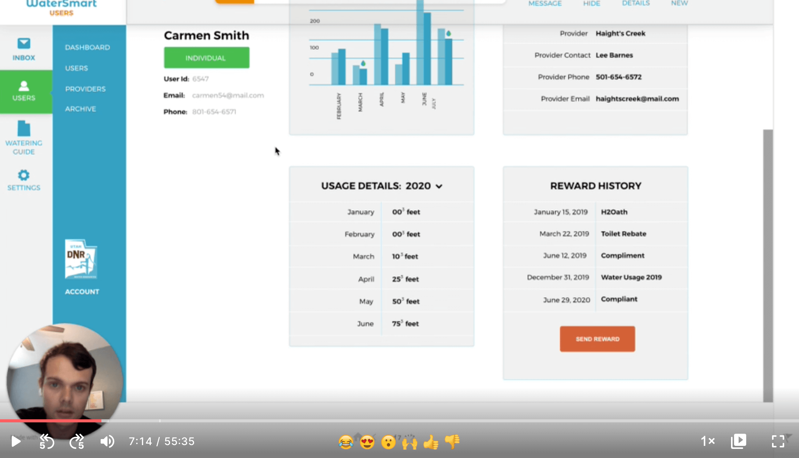
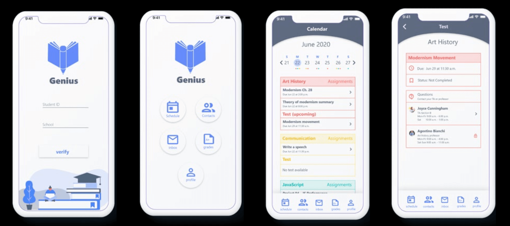
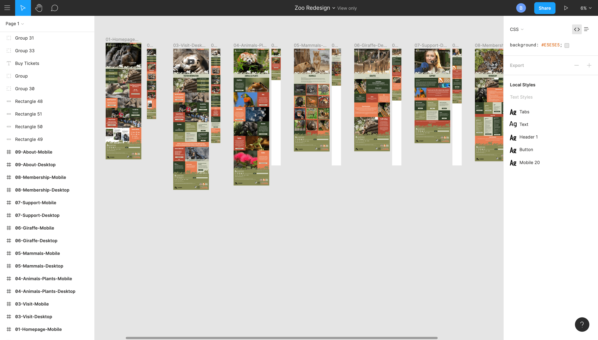

Teaching at the Laguna College of Art + Design (LCAD) and BYU Idaho Online (BYUI) for me is extremely rewarding and pushes me to stay at the top of my game. Even though I’m in the trenches as a designer at a design agency I find teaching a unique opportunity to connect with students having their best interests in mind. I enjoy seeing students grow and succeed as they find jobs in the industry.
“If learning material…is designed to be highly relevant and delivered in context then it is likely to be useful”
I find each semester as a new opportunity to improve from the lessons and feedback that I get from my students. Feedback is incredibly important to me, I find it challenging and exciting to push myself to be better and share my love for design with them. As much as possible I make in the moment adjustments during the class to adjust to students/situational needs that benefit outcomes. I love getting up in front of the class and facilitating a discussion and trying to gauge what topics resonate with my students the most. There's only so much I can say or do, so bringing in guest speakers and professional to help support the topics we discuss. It's just like my own kids, they will listen to anyone but their parents.
With each course, we use a mixture of design tools like Figma and Adobe XD. Development tools like Webflow, Brackets, Github, Netlify, and browser inspector tools. The goal is to build the foundation for students to continue to learn and have the vocabulary to push their knowledge. I don’t expect my students to learn everything but I hope to instill a desire to learn more and have appreciation for the craft.
1-hour redesign challenge in Figma. I provide the template with page content and images, and then they find inspiration and design however they see fit. It’s a fun in-class assignment to pressure students to race against the clock and see what sections or content is more important.
When I first started teaching at LCAD back in 2015 I would have students print out their work which helped everyone see how their designs match up compared to their peers. Now with the combination of Figma sharing and remote learning we are able to collaborate easily by showing off work and progress to iterate and explore different design solutions. At BYUI I use Loom to provide student critiques by sharing my screen and video to help communicate my thoughts and ideas.
For BYUI we focus on topics from Don Norman's book “The Design of Everyday Things.” Weekly design discussion and lectures at LCAD consist of some of the following topics:
We challenge students with the task of researching a subject that involves two users and design a different device experience for each. For example, a teacher and student, the teacher would see the assignments and grades. The student would see the assignments that need to be done and communications with the teacher. They have shared information but they are utilizing it in different ways.
BYUI student work from Spring 2020 and their professional student/ta app.
Consistency is important and the goal is to create layouts and components that are repeatable on multiple screens. Students feel overwhelmed at first and learn to find sections to show some unique styles and other areas to keep it simple with a defined system.
Student work from LCAD Spring 2020 showcasing the redesign of the LA Zoo mobile and desktop screens.
Customized from a starter Figma template, students hand code and work through weekly exercises in Webflow to understand the components of a website or app. The assignment helps to give students a simple framework which includes, colors, fonts, buttons, inputs, columns, card styles and more. Students have the ability to customize it throughout the semester and follow along with the coding exercises.
At the end of the day students are attending these schools to get an education that will lead to a career. One of the best ways to get that career is through a well designed and interactive portfolio website full of detailed projects. Therefore, the final project at LCAD is to create a personal portfolio that they can build from this class until graduation. This supports their desires to get internships and full time jobs after graduation. Most students tend to use Squarespace and I like to introduce Webflow as an alternative to allow them flexibility and freedom to express their design style.
Students should understand the basic principles of web design, considering how interactions and layouts affect the user. They work on gaining an understanding of coding, development environments, and pushing code. Students should have a portfolio site ready to be shown to employers in the coming months leading up to graduation.
Students are challenged to discuss deep user interaction topics with one another and put them into practice. They will come away with an understanding of responsive design and the difference it has to app design. Students will understand the process it takes to work through research, prototyping, testing, and designing their screens to meet user needs.